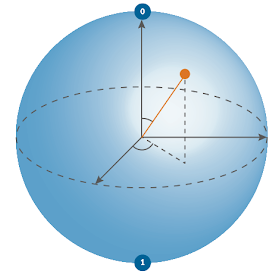
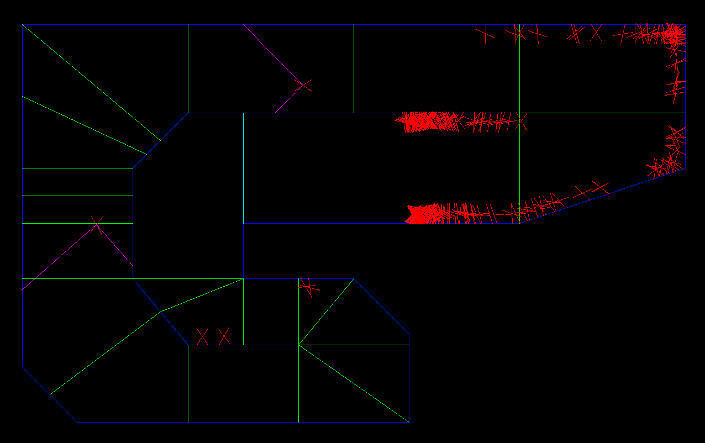

About
I am a programmer with many different skills built up throughout my career in the coderclass. A program at my highschool where from the beginning I got five hours of computer science lessons every week. I build skills in design of games and websites, many different programming languages, working for a client and agile project development.
On this page you can find some of the projects I am proud of, some of which are old and show how I developed, but I still am proud of all of them.
Dutch computer science olympiad
For this project I participated in the Dutch computer science olympiad or NIO. A competition where one has to solve computer science related problems to gather points in the competition and only the few with the most points advance to the next round. At this moment I got through the first and second round. The third round still needs to take place so more information will follow.
May 2022
Chess
Chess, on this site, click
here
Quantum quest

I participated in the quantum quest, a lesson series from the UvA which is all about quantum bits and how they work. I worked in a team from my school with Mattia and Douwe. I learned a lot from this course. I know the basics of quantum computing and programming.
Me and my team did so well on the exercises of the course we got a book about quantum computing :).
Januray 2021
Ai learns to drive

For the last half a year I worked on an ai that wil learn to drive a track, It uses Nueral Evolution to train the cars.
more info can be found here.
Januray 2020
Boids
Hi there I'm working on a new project Boids. This is a floking simulation
I got the idea after watching a youtube video and have just made a new github repo where you can check it out for your self.
here you can find the original video by Sebastian Lague.
and here you can find my project
August 27th 2019
Neural Net
I have recently started working on a neural network for my self. This is for me to learn how neural networks work. It is still very basic and can't learn but if you have the right data you could (with a little refactoring of the code, because at this point it can only create a random neural net, I have chosen this because I want the net to learn) have it working. Keep in mind that I will expand this project over time and that it might take me a lot of it to develop this into something useful. Anyway
here
is the source code. It is written in python. you can get python
here
and you don't need any libraries.
March 9th 2019
Dungeon Crawler
This is a little dungeon crawler game where you move by typing commands like
w, move up
a, move left
s, move down
d, move right
"Item" means that you can type in the name of an item in that spot of the command
there are 3 Items in the current state of the game V1.0
healing potion, gives you 20 health back
sword, you can use it to deal damage to monsters
and the key
source code
here
!! you do need to have python installed, you can download it
here
March 9th 2019
Evolution
 I made an evolution simulation, a lot of balls are flying through the screen trying to eat fruit(the little green dots). The ball's get randomly generated with random properties (such as size). If a ball eats enough foot it can reproduce, its ofspring has a chance of mutating. If a ball doesn't eat in a long time it dies
I made an evolution simulation, a lot of balls are flying through the screen trying to eat fruit(the little green dots). The ball's get randomly generated with random properties (such as size). If a ball eats enough foot it can reproduce, its ofspring has a chance of mutating. If a ball doesn't eat in a long time it dies
!! you need python, pygame and numpy to be instaled on your computer!!
here is a link to instalation websites: python, pygame, numpy
click here to download the simulation
Space invaders extream
credits to codemaker4 on github
 In this game your goal is to survive. shoot enemies to get more score. to regain life you have to not get damiged for a short period of time. have fun!!
In this game your goal is to survive. shoot enemies to get more score. to regain life you have to not get damiged for a short period of time. have fun!!
click here to go to game
Avoid the balls
 This is a game where you as player have to aviod al the balls. smaller balls do less damige then big ones. if your life is lower then 0 you die
This is a game where you as player have to aviod al the balls. smaller balls do less damige then big ones. if your life is lower then 0 you die
click here to play game
Japan
 Well, I went to Japan and it was amazing. I went there for a robot competition because I won another prize earlier in the year. The trip to Japan was great although I didn't like the food in the airplane. When we arrived in Tokyo we went to the house. The next day we went exploring the neighborhood. The next 3 days we went to the workshop to learn how to program pepper (A humanoid robot). Then the time came we had to show our skills on stage for the jury. We didn't end up in a good spot though. At least not in the top three. The last two days we went to the biggest arcade in the world and to a cool mauntain. That was my time in Tokyo.
Well, I went to Japan and it was amazing. I went there for a robot competition because I won another prize earlier in the year. The trip to Japan was great although I didn't like the food in the airplane. When we arrived in Tokyo we went to the house. The next day we went exploring the neighborhood. The next 3 days we went to the workshop to learn how to program pepper (A humanoid robot). Then the time came we had to show our skills on stage for the jury. We didn't end up in a good spot though. At least not in the top three. The last two days we went to the biggest arcade in the world and to a cool mauntain. That was my time in Tokyo.
want to see more click here
or want to read more in depth click here
contacts:
github : midasscheffers
e-mail : midasscheffers@gmail.com
instagram : cheetah_fotos